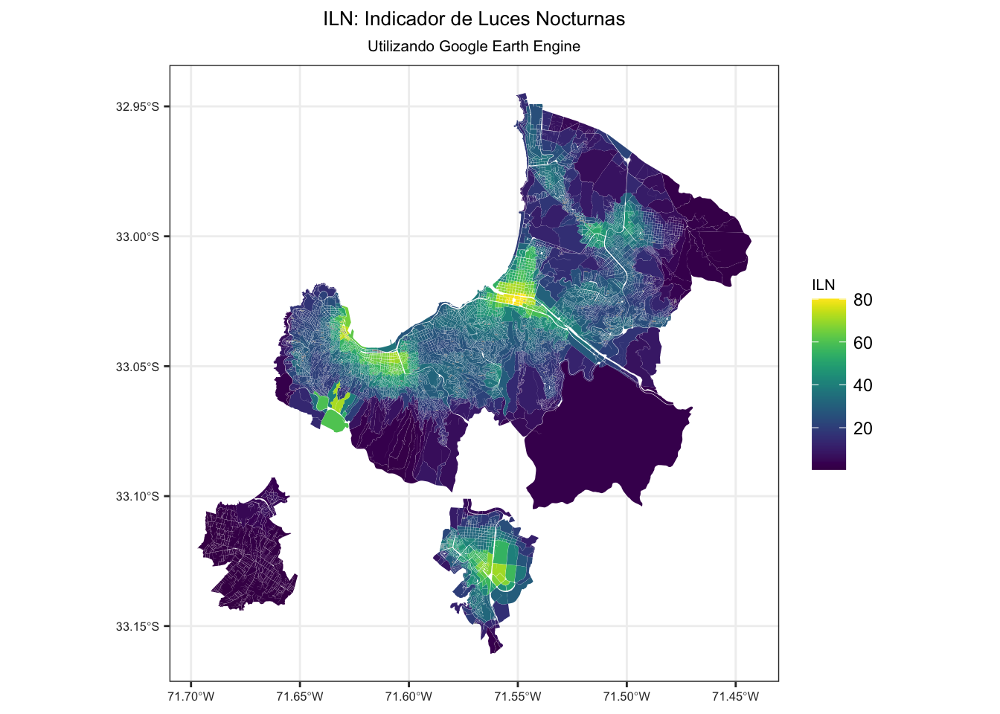

| Name | Units | Min | Max | Description |
|---|---|---|---|---|
| avg_rad | nanoWatts/cm2/sr | -1.5* | 193565* | Average DNB radiance values. |
| cf_cvg | NA | 0* | 84* | Cloud-free coverages; the total number of observations that went into each pixel. This band can be used to identify areas with low numbers of observations where the quality is reduced. |
Luces Nocturnas con GEE
Índice de Luminosidad Nocturna
Objetivos
Construir un indicador territorial que represente la luminosidad nocturna, cuya unidad mínima sea manzana urbana y entidad rural, a nivel país que se denominará “Indicador de Iluminosidad Nocturna (ILN).
Metodología
De forma general se utilizará como base producto satelital llamado VIIRS Stray Light Corrected Nighttime Day/Night Band Composites Version 1, que entrega valores de radiancia media mensual del infrarojo visible, utilizando la plataflorma de GEE para su adquisisción y procesamiento.
Se definirá una región de estudio, paral el caso práctico de cálculo es la área urbana de las comunas de Valparaíso y Viña del Mar en la V Región, se le aplicará un buffer de 1000 metros y se cortará imagen tipo raster obtendida del producto satelital antes mecionado.
Finalmente se procederá extraer el valor de indicador por unidad territorial mínima, manzana urbana y entidad censal, mediante el cáculo del promedio de los valores de pixeles que contiene en su interior, y este valor será el del indicador ILN. Para tener control de flujo de este proceso se rezarará mediante un ciclo interativo por Distrito censal, en caso de caerse la conexión con GEE, se puede continuar en el distrito correcto, sin perder lo avanzado.
Producto Satelital
- Nombre:
-
VIIRS Stray Light Corrected Nighttime Day/Night Band Composites Version 1
- Descripción:
-
Imágenes compuestas de radiancia media mensual utilizando datos nocturnos del Visible Infrared Imaging Radiometer Suite (VIIRS) Day/Night Band (DNB).
Como estos datos se componen mensualmente, hay muchas zonas del planeta en las que es imposible obtener una cobertura de datos de buena calidad para ese mes. Esto puede deberse a la nubosidad, especialmente en las regiones tropicales, o a la iluminación solar, como ocurre hacia los polos en sus respectivos meses de verano. Por lo tanto, se recomienda que los usuarios de estos datos utilicen la banda ‘cf_cvg’ y no asuman que un valor de cero en la imagen de radiancia media significa que no se observaron luces.
La cobertura de nubes se determina utilizando el producto VIIRS Cloud Mask (VCM). Además, los datos cercanos a los bordes de la franja no se incluyen en los compuestos (zonas de agregación 29-32). La versión 1 NO ha sido filtrada para separar las luces de la aurora, los incendios, los barcos y otras luces temporales. Esta separación está en desarrollo y se incluirá en una versión posterior de esta serie temporal. También está en desarrollo un método para separar las luces de los valores de fondo (no luces).
Este producto es una configuración alternativa del DNB de VIIRS que utiliza un procedimiento para corregir la luz parásita. El procedimiento de corrección extiende las áreas visibles más cerca de los polos y mejora el rango dinámico. Hay que tener en cuenta que se introducen algunos artefactos debido al procedimiento utilizado en las regiones crepusculares; véase el documento de referencia para más detalles. Este producto excluye los datos afectados por la nubosidad.
- Bandas:
-
Resolution: 463.83 meters
- Estimated min or max value
Cálculo
A continuación se define el flujo de trabajo para calcular el indicador de ILN.
Cargar Librerías
library(dplyr)
library(sf)
library(mapview)
library(ggplot2)
library(viridis)
library(rgee)
ee_Initialize()── rgee 1.1.5 ─────────────────────────────────────── earthengine-api 0.1.317 ──
✔ user: not_defined
✔ Initializing Google Earth Engine:
✔ Initializing Google Earth Engine: DONE!
✔ Earth Engine account: users/denisberroeta
──────────────────────────────────────────────────────────────────────────────── Definición de Área de Estudio
Para este ejemplo se definirá como área de estudio las zonas urbanas del gran Valparaíso. Para esto tenemos un archivo tipo llamado Zonas_Censales_2017_Nacional.rds tipo polígonos espaciales, que corresponden a zonas censales (INE) que son urbanas únicamente. Estas geometrías se utilizarán únicamente para definir la región de estudio.
zonas_ine <- readRDS("data/censo/zonas_urb_consolidadas.rds")A continuación utilizaremos las zonas censales, para definir una región de estudio general, filtrando las comuna de nuestro interés en este caso las comunas de Valparaíso y Viña del Mar.Debemos tener especial cuidado en el Sistema de Referencias de Coordenadas (CRS), ya que necesitamos que en coordenadas geográfica EPSG(4326), si está en algún otro CRS, se puede transformar utilizando la función st_transform(). Posterriormente se ibuja una geometría única que toma solamente el contorno de las zonas censales filtradas utilizando la función st_union. Finalmente a esta geometría única se le aplicarà un buffer (st_buffer()) de 1000 metros, a fin de asegurarnos que no queden partes de polígonos sin curbrir con el raster.
mis_comunas <- c("VALPARAÍSO", "VIÑA DEL MAR")
ae <- zonas_ine %>%
st_as_sf() %>%
filter(NOM_COMUNA %in% mis_comunas) %>%
st_transform(4326) %>%
st_union() %>%
st_buffer(1000)A continuación se visualiza el área de
mapview(ae)Trannsformar a formato soportado por google earth Engine
ae_ee <- ae %>% sf_as_ee()Lectura de Producto Satelital
dataset <- ee$ImageCollection('NOAA/VIIRS/DNB/MONTHLY_V1/VCMSLCFG')$
filterDate('2020-01-01', '2020-12-01')$
select("avg_rad")$
median()
imagen <- dataset$clip(ae_ee)vis <- list(min = 0, max = 60,
palette = c('0602ff', '235cb1', '307ef3', '269db1', '30c8e2',
'32d3ef', '3ae237','b5e22e', 'd6e21f', 'fff705',
'ffd611', 'ffb613', 'ff8b13', 'ff6e08', 'ff500d',
'ff0000', 'de0101', 'c21301'))region <- ae_ee$bounds()Visualización del producto satelital
Map$centerObject(region, zoom = 11)
Map$addLayer(imagen, vis, name = "Nighttime")Cálculo de Indicador
mz_comuna <- readRDS("data/censo/manzanas.rds") %>%
filter(NOM_COM %in% mis_comunas) %>%
mutate(DISTRITO = substr(COD_ZON, 5, 7)) %>%
st_transform(4326)
# mapview(valpo_mz, zcol = "PERSONAS")Es un proceso costoso computacionalmente, lo que toma un tiempo cercano a 3 minutos, es recomendable iterar por Distrito Censalcon objetivo si se cae la conexión con GEE en medio del cálculo, podriamos recomenzar eventualmente en el distrito censal donde se paro la instrucción.
mz_lum <- NULL
for(distrito in unique(mz_comuna$DISTRITO)){
print(paste0("Procesando DISTRITO censal ", distrito))
mz_filtrada <- mz_comuna %>%
filter(DISTRITO == distrito)
# calculando la luminosidad
mz_luminocidad <- ee_extract(x = imagen, y = mz_filtrada,
sf = T,scale = 500,
fun =ee$Reducer$mean())
mz_lum <- rbind(mz_lum, mz_luminocidad)
}Guardar los resultados del objeto espacial generado en formato rds
saveRDS(mz_lum, "data/shape/luces_noc_gran_valpo.rds")# mapview::mapview(mz_lum, zcol = "avg_rad")
# vislauzación cartografica
ind_LN <- ggplot() +
geom_sf(data = mz_lum, aes(fill = avg_rad), color=NA) +
scale_fill_viridis()+ theme_bw()+
# xlab( "longitud") + ylab("latitud")+
labs(title = "ILN: Indicador de Luces Nocturnas",
subtitle = "Utilizando Google Earth Engine",
fill = "ILN")+
theme(panel.grid.major = element_line(colour = "gray94"),
panel.grid.minor = element_line(colour = "gray94"),
plot.title = element_text(hjust = 0.5, size = rel(0.9)),
plot.subtitle = element_text(hjust = 0.5, size = rel(0.7)),
legend.title = element_text(size = rel(0.7)),
panel.background = element_rect(fill = "gray100"),
axis.text.x = element_text(color = "grey20", size = rel(0.7)),
axis.text.y = element_text(color = "grey20", size = rel(0.7)))
ind_LN